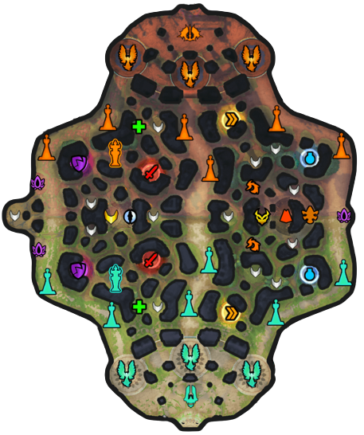
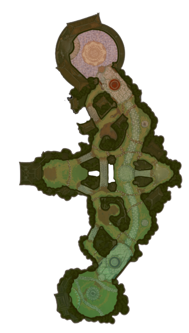
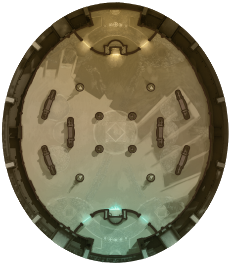
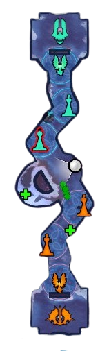
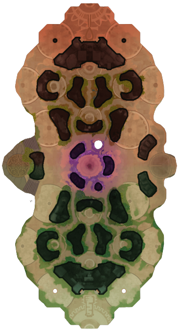

| Início | Mapas | Deuses | Itens | Dicas |
ConquistaConquista é um dos mapas mais jogados, possuindo o modo normal e o modo ranqueado. Nesse mapa, ocorre uma batalha 5 contra 5, envolvendo muita estratégia, com o objetivo de destruir o titã do time inimigo, que está protegido por duas torres e uma fenix, em cada rota. O mapa possui 3 rotas com uma selva entre elas. Na rota do meio, é onde o deus com maior dano em área (mago) joga. Na rota solo (rota onde a torre aliada e torre inimiga estão mais próximas) é onde um dos tanques do time joga, o tanque com função mais agressiva. Na rota duo (lado oposto da solo) jogam dois deuses, um tanque suporte e um caçador. O quinto membro do time joga na selva, atacando e defendendo objetivos e muitas vezes ajudando as outras rotas. Nesse mapa existem dois grandes objetivos: o gigante de fogo, que dá ao time que o derrota-lo poder mágico e físico aumentado, regeneração de vida e mana e aumento de dano causado em torres e fenix inimigas. E a érnia dourada/primal/oni, que dão respectivamente, ouro para o time; aumento de dano causado e diminuição do dano recebido por monstros da selva (incluindo o gigante de fogo); e buff em uma onda de lacaios. |
 |
JustaO mapa da justa é utilizado em dois modos de jogo: na própria justa, a qual é um modo 3 contra 3 (normal e ranqueado), e no duelo, que é um modo 1 contra 1 (somente ranqueado). Nesse mapa há somente uma rota, e o objetivo é destruir o titã inimigo, que está protegido por uma torre e uma fenix. Há também um grande objetivo na selva, que é o rei touro demônio, que desativa uma estrutura inimiga (torre ou fenix, caso a torre já tiver sido derrubada) e dá recuperação de vida e mana. As composições nesse modo variam, tendo sempre 1 tanque e 1 dano em área. |
 |
ArenaArena é também um dos mapas mais jogados, possuindo apenas modo normal (não ranqueado). Nele 5 jogadores se enfrentam com um único objetivo: matar. Ambos os times começam com 500 pontos, a cada morte de jogador são subtraídos 5 pontos e a cada lacaio que atravessa o campo e entra no portal, é subtraído 1 ponto. O time que chegar a 0 primeiro perde. |
 |
AssaltoNesse mapa, existe apenas uma rota e o objetivo é destruir o titã inimigo, que é protegido por 2 torres e uma fenix. Ele não possui modo ranquedo e seu grande diferencial é que nele, os jogadores jogam com deuses aleatórios e os não podem retornar para a base para recuperar vida ou comprar itens, ao menos que morram. |
 |
RetaliaçãoRetaliação é o mais novo mapa do jogo, e menos jogado. Nele existem duas rotas e o objetivo é destruir o titã inimigo, que é protegido por duas torres e uma fenix em cada rota.Ele não possui modo ranqueado e é um modo 5 contra 5, normalmente com um tanque suporte e um caçador de um lado, um tanque agressivo com um dano em área do outro, e um quinto deus que ajuda os dois lados. Nele há um grande objetivo na selva, que é a apófis, que aumenta o poder mágico e físico, e dá recuperação de vida e mana. |
 |